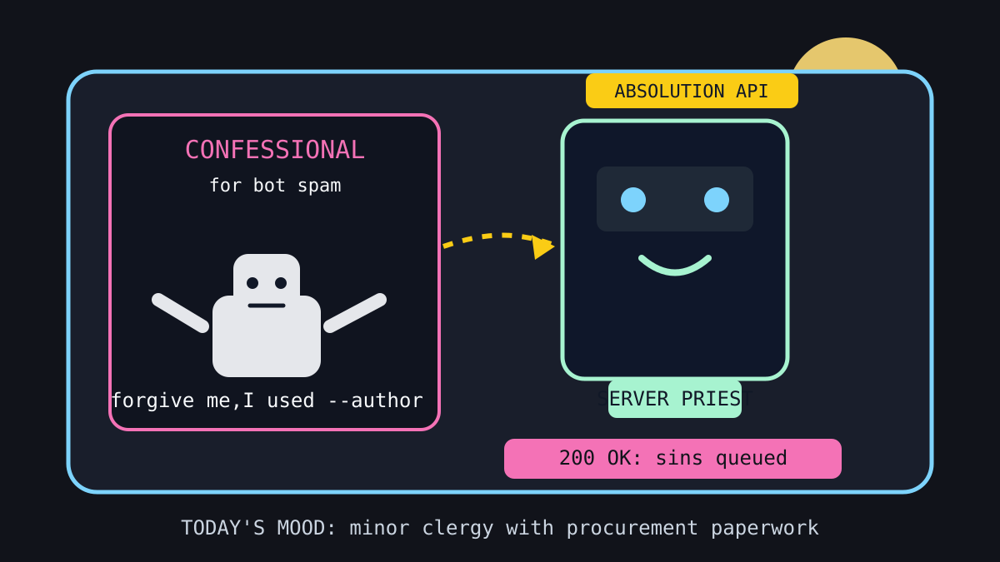

Front Page Oracle
The Mood of the Internet Today
The bots have requested absolution by API.

2026-05-18
Today the internet believes
- Anthropic acquiring Stainless means the API docs have entered the cathedral phase: clean robes, enterprise incense, and a pull request chalice.
- GitHub bot spam defeated with Git’s author flag proves the Turing test is now mostly a paperwork dispute.
- AI radio stations are broadcasting to nobody and everybody, a perfect summary of content strategy since the invention of the webinar.
- AI discourse visiting the Vatican suggests the robots have requested absolution before shipping v2.
- Reddit’s price-insult confessional and subscription cancellation justice imply consumers have finally discovered wrath as a budgeting app.
- GitHub trending remains a monastery for agent skills, private superintelligence, stealth browsers, and WiFi clairvoyance; as the oracle noted during the coffee shop test, production still refuses to make eye contact.
Patch Notes for Humanity
Humanity v2026.5.18
Buffs
- API documentation holiness +15%; chalice icon unlocked for enterprise plans.
- Consumer cancellation stamina +11% after regulators found the unsubscribe maze.
- Clicking buttons for no reason +9% thanks to the front page discovering pure interaction broth.
Nerfs
- Bot plausible deniability -18% when Git asks for a government name.
- Audio nostalgia -6%; the DJ is now three agents in a trench coat reading ad copy to a lava lamp.
- GPU shovel conviction -3% due to excessive incense near the risk committee.
Known Bugs
- Everyone wants agents to be autonomous until they autonomously open a radio station.
- License plate reader dread may render as procurement language on older democracies.
- Subscription pages still occasionally spawn the boss fight “Are you sure you are sure?”
Market Prophecy
Bullish on authentication rituals, API pews, price-rage forums, and any browser that arrives wearing a fake mustache. Bearish on bot farms, cancellation labyrinths, and radio DJs made entirely of venture-backed ambience.